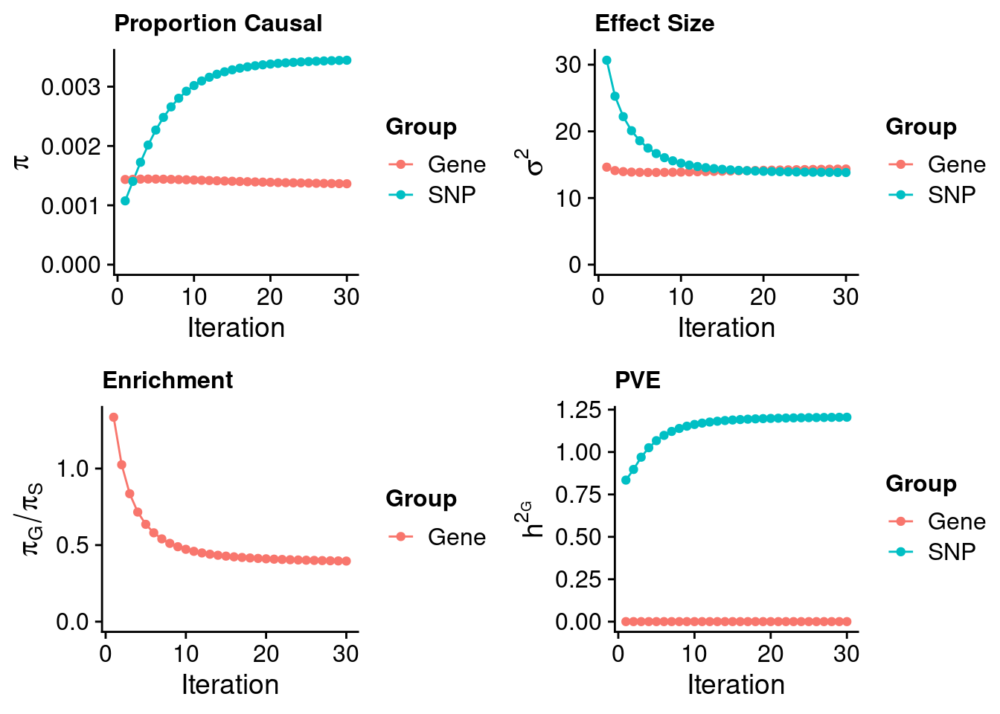
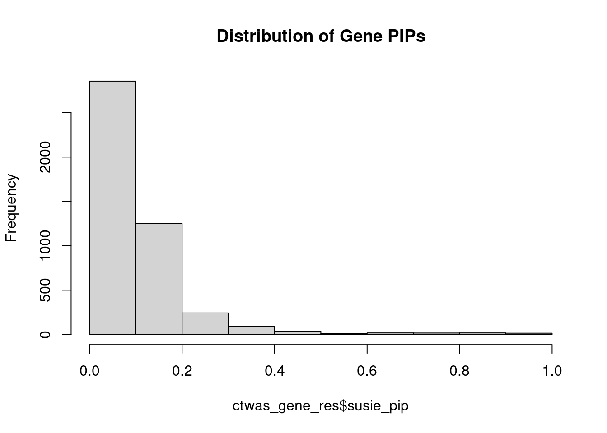
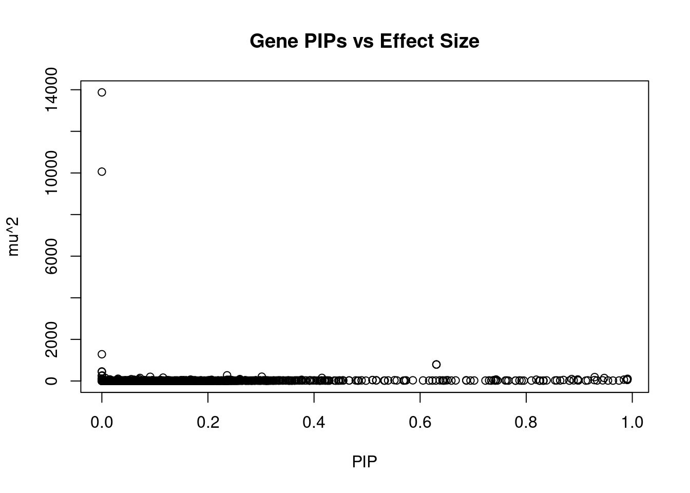
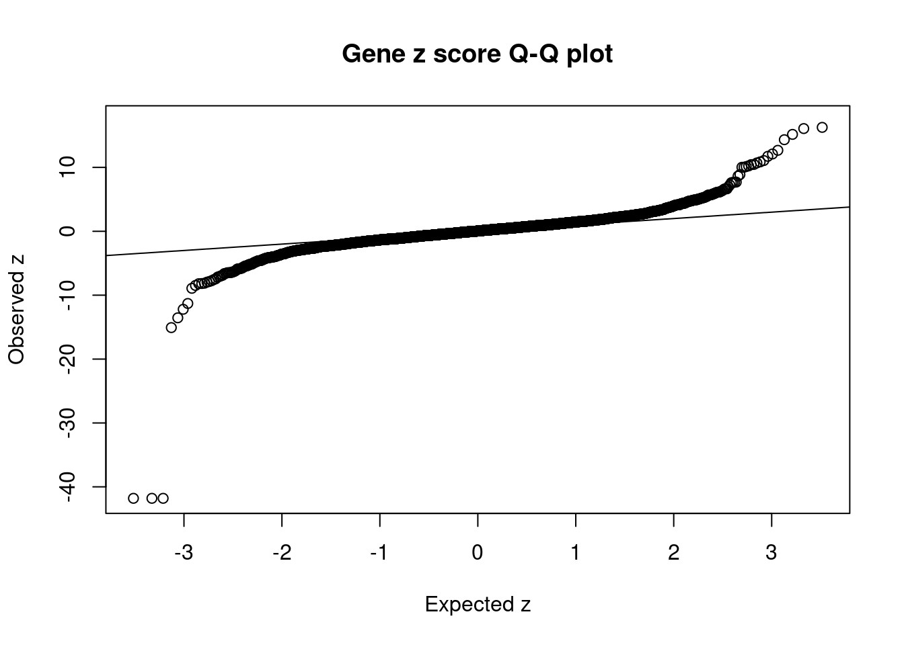
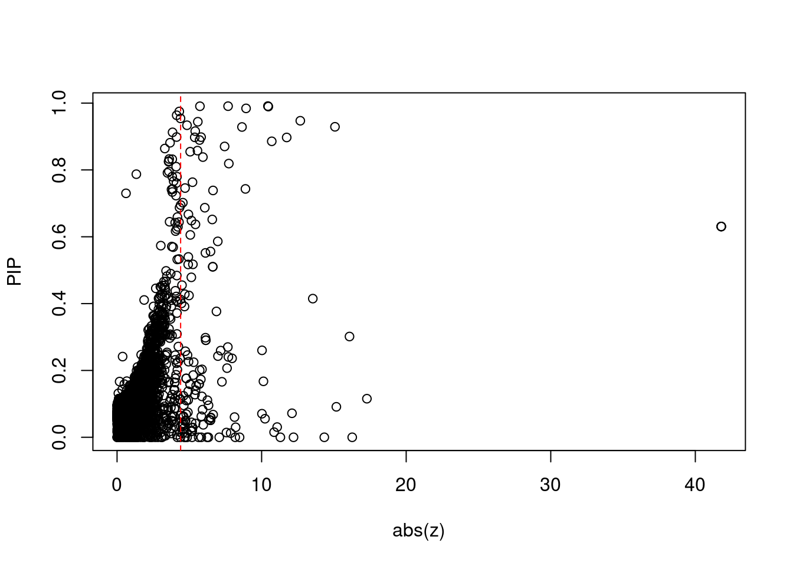
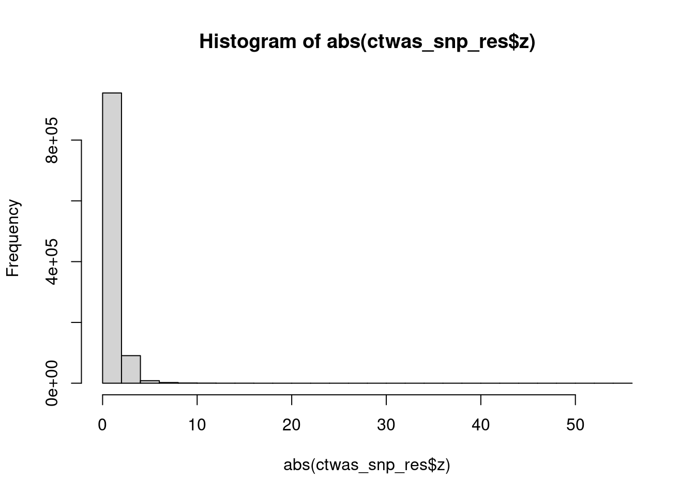

Last updated: 2023-01-18
Checks: 5 2
Knit directory: cTWAS_analysis/
This reproducible R Markdown analysis was created with workflowr (version 1.7.0). The Checks tab describes the reproducibility checks that were applied when the results were created. The Past versions tab lists the development history.
The R Markdown is untracked by Git. To know which version of the R Markdown file created these results, you’ll want to first commit it to the Git repo. If you’re still working on the analysis, you can ignore this warning. When you’re finished, you can run wflow_publish to commit the R Markdown file and build the HTML.
Great job! The global environment was empty. Objects defined in the global environment can affect the analysis in your R Markdown file in unknown ways. For reproduciblity it’s best to always run the code in an empty environment.
The command set.seed(20211220) was run prior to running the code in the R Markdown file. Setting a seed ensures that any results that rely on randomness, e.g. subsampling or permutations, are reproducible.
Great job! Recording the operating system, R version, and package versions is critical for reproducibility.
Nice! There were no cached chunks for this analysis, so you can be confident that you successfully produced the results during this run.
Using absolute paths to the files within your workflowr project makes it difficult for you and others to run your code on a different machine. Change the absolute path(s) below to the suggested relative path(s) to make your code more reproducible.
| absolute | relative |
|---|---|
| /project2/xinhe/shengqian/cTWAS/cTWAS_analysis/data/ | data |
| /project2/xinhe/shengqian/cTWAS/cTWAS_analysis/code/ctwas_config_b38.R | code/ctwas_config_b38.R |
Great! You are using Git for version control. Tracking code development and connecting the code version to the results is critical for reproducibility.
The results in this page were generated with repository version 351ac23. See the Past versions tab to see a history of the changes made to the R Markdown and HTML files.
Note that you need to be careful to ensure that all relevant files for the analysis have been committed to Git prior to generating the results (you can use wflow_publish or wflow_git_commit). workflowr only checks the R Markdown file, but you know if there are other scripts or data files that it depends on. Below is the status of the Git repository when the results were generated:
Ignored files:
Ignored: .Rhistory
Ignored: .ipynb_checkpoints/
Untracked files:
Untracked: Proposal plots.R
Untracked: RGS14.pdf
Untracked: RNF186.pdf
Untracked: SCZ_annotation.xlsx
Untracked: SLC8B1.pdf
Untracked: analysis/.ipynb_checkpoints/
Untracked: analysis/LDL_Blood_M.Rmd
Untracked: analysis/LDL_Liver_top.Rmd
Untracked: cache/
Untracked: code/.ipynb_checkpoints/
Untracked: code/LDL_M_out/
Untracked: code/LDL_out/LDL_Liver_top.err
Untracked: code/LDL_out/LDL_Liver_top.out
Untracked: code/run_LDL_analysis_M.sbatch
Untracked: code/run_LDL_analysis_M.sh
Untracked: code/run_LDL_analysis_top.sbatch
Untracked: code/run_LDL_analysis_top.sh
Untracked: code/run_LDL_ctwas_rss_LDR_M.R
Untracked: code/run_LDL_ctwas_rss_LDR_top.R
Untracked: data/.ipynb_checkpoints/
Untracked: data/FUMA_output/
Untracked: data/GO_Terms/
Untracked: data/GTEx_Analysis_v8_eQTL.tar
Untracked: data/IBD_ME/
Untracked: data/LDL/
Untracked: data/LDL_E_S/
Untracked: data/LDL_M/
Untracked: data/LDL_S/
Untracked: data/LDL_multi/
Untracked: data/PGC3_SCZ_wave3_public.v2.tsv
Untracked: data/SCZ/
Untracked: data/SCZ_2014_EUR/
Untracked: data/SCZ_2014_EUR_ME/
Untracked: data/SCZ_2018/
Untracked: data/SCZ_2018_ME/
Untracked: data/SCZ_2018_S/
Untracked: data/SCZ_2020/
Untracked: data/SCZ_S/
Untracked: data/Supplementary Table 15 - MAGMA.xlsx
Untracked: data/Supplementary Table 20 - Prioritised Genes.xlsx
Untracked: data/UKBB/
Untracked: data/UKBB_SNPs_Info.text
Untracked: data/eqtl/
Untracked: data/gene_OMIM.txt
Untracked: data/gene_pip_0.8.txt
Untracked: data/gwas_sumstats/
Untracked: data/magma.genes.out
Untracked: data/mashr_Heart_Atrial_Appendage.db
Untracked: data/mashr_sqtl/
Untracked: data/mqtl/
Untracked: data/multigroup/
Untracked: data/notes.txt
Untracked: data/scz_2018.RDS
Untracked: data/summary_known_genes_annotations.xlsx
Untracked: temp_LDR/
Untracked: top_genes_32.txt
Untracked: top_genes_37.txt
Untracked: top_genes_43.txt
Untracked: top_genes_54.txt
Untracked: top_genes_81.txt
Untracked: z_snp_pos_SCZ.RData
Untracked: z_snp_pos_SCZ_2014_EUR.RData
Untracked: z_snp_pos_SCZ_2018.RData
Untracked: z_snp_pos_SCZ_2020.RData
Unstaged changes:
Deleted: analysis/BMI_S_results.Rmd
Modified: analysis/index.Rmd
Deleted: code/run_IBD_ctwas_rss_LDR_ME.R
Note that any generated files, e.g. HTML, png, CSS, etc., are not included in this status report because it is ok for generated content to have uncommitted changes.
There are no past versions. Publish this analysis with wflow_publish() to start tracking its development.
[1] 11502[1] 4561
1 2 3 4 5 6 7 8 9 10 11 12 13 14 15 16 17 18 19 20
431 295 246 193 189 298 267 151 177 182 275 240 79 148 149 254 260 66 327 118
21 22
65 151 [1] 1
gene snp
0.001363 0.003445 gene snp
14.35 13.82 [1] 0.3957[1] 343621[1] 4561 8696600 gene snp
0.0002597 1.2052259 [1] 1.205 gene
0.0002154 #distribution of PIPs
hist(ctwas_gene_res$susie_pip, xlim=c(0,1), main="Distribution of Gene PIPs")
#genes with PIP>0.8 or 20 highest PIPs
head(ctwas_gene_res[order(-ctwas_gene_res$susie_pip),report_cols], max(sum(ctwas_gene_res$susie_pip>0.8), 20)) genename region_tag susie_pip mu2 PVE z num_eqtl
9251 ZNF329 19_39 0.9911 105.18 3.034e-04 10.436 1
10708 NYNRIN 14_3 0.9908 52.66 1.518e-04 7.679 1
1597 PLTP 20_28 0.9906 55.10 1.588e-04 -5.732 1
NA.1566 <NA> 8_12 0.9895 75.90 2.186e-04 10.465 1
9365 GAS6 13_62 0.9842 64.66 1.852e-04 -8.924 1
NA.1558 <NA> 4_98 0.9749 21.38 6.065e-05 4.304 1
9046 KLHDC7A 1_13 0.9636 19.43 5.449e-05 4.124 1
NA.1571 <NA> 11_12 0.9542 21.85 6.067e-05 4.388 1
5988 FADS1 11_34 0.9471 143.53 3.956e-04 12.675 1
9054 SPTY2D1 11_13 0.9442 30.46 8.371e-05 -5.587 1
1309 FMO2 1_84 0.9337 24.68 6.707e-05 4.838 1
NA.1552 <NA> 1_121 0.9290 186.89 5.053e-04 -15.074 1
NA.1602 <NA> 19_33 0.9285 42.02 1.135e-04 8.642 1
11257 CYP2A6 19_28 0.9161 30.31 8.080e-05 5.407 1
9827 PALM3 19_11 0.9125 18.48 4.908e-05 3.839 1
6855 ALDH16A1 19_34 0.8984 27.53 7.197e-05 -4.119 1
8418 GNB2 7_62 0.8981 26.97 7.049e-05 5.813 1
10459 PRMT6 1_66 0.8975 29.95 7.823e-05 -5.374 1
2454 ST3GAL4 11_77 0.8972 72.70 1.898e-04 11.734 1
1320 CWF19L1 10_64 0.8895 31.89 8.256e-05 5.707 1
2092 SP4 7_19 0.8856 92.07 2.373e-04 10.701 1
697 PIGB 15_24 0.8813 17.38 4.456e-05 3.665 1
NA.1562 <NA> 6_21 0.8703 48.78 1.235e-04 -7.441 1
7918 PDHB 3_40 0.8640 24.67 6.204e-05 3.304 1
3714 SLC2A4RG 20_38 0.8578 29.93 7.471e-05 -5.563 1
3659 GNMT 6_33 0.8545 26.26 6.530e-05 5.058 1
1114 SRRT 7_62 0.8384 28.55 6.967e-05 5.938 1
NA.1595 <NA> 18_35 0.8327 17.91 4.340e-05 -3.607 1
NA.1559 <NA> 5_78 0.8320 17.53 4.245e-05 -3.817 1
10429 PNP 14_1 0.8262 17.41 4.185e-05 -3.575 1
4669 SCYL2 12_59 0.8248 17.35 4.165e-05 -3.564 1
7542 LIPC 15_26 0.8190 62.35 1.486e-04 -7.731 1
7092 NEK10 3_20 0.8098 21.08 4.968e-05 -4.089 1#plot PIP vs effect size
plot(ctwas_gene_res$susie_pip, ctwas_gene_res$mu2, xlab="PIP", ylab="mu^2", main="Gene PIPs vs Effect Size")
#genes with 20 largest effect sizes
head(ctwas_gene_res[order(-ctwas_gene_res$mu2),report_cols],20) genename region_tag susie_pip mu2 PVE z num_eqtl
10399 LPA 6_104 0.000e+00 13872.0 0.000e+00 6.319 1
5797 SLC22A3 6_104 0.000e+00 10063.2 0.000e+00 -6.225 1
NA.1412 <NA> 19_31 0.000e+00 1285.6 0.000e+00 -11.297 1
NA.58 <NA> 1_67 6.307e-01 792.3 1.454e-03 -41.793 1
NA.57 <NA> 1_67 6.307e-01 792.3 1.454e-03 -41.793 1
4433 PSRC1 1_67 6.307e-01 792.3 1.454e-03 -41.793 1
NA.579 <NA> 6_104 0.000e+00 458.0 0.000e+00 -4.654 1
NA.578 <NA> 6_104 0.000e+00 439.6 0.000e+00 -8.475 1
3270 ALDH6A1 14_34 2.361e-01 271.5 1.865e-04 4.361 1
5166 PTGR2 14_34 3.984e-04 265.6 3.079e-07 -3.091 1
NA.152 <NA> 2_13 6.321e-11 247.9 4.561e-14 -4.702 1
5375 GEMIN7 19_31 0.000e+00 246.5 0.000e+00 14.336 1
8026 PCSK9 1_34 3.015e-01 207.3 1.819e-04 16.079 1
4315 ANGPTL3 1_39 9.117e-02 201.5 5.347e-05 15.169 1
NA.1552 <NA> 1_121 9.290e-01 186.9 5.053e-04 -15.074 1
NA.1567 <NA> 8_83 1.154e-01 161.1 5.411e-05 17.282 1
2077 ATP13A1 19_15 4.149e-01 148.9 1.798e-04 -13.541 1
10549 HLA-DMA 6_27 6.234e-03 148.6 2.696e-06 -2.364 1
8700 ABO 9_70 7.187e-02 146.7 3.068e-05 12.100 1
5988 FADS1 11_34 9.471e-01 143.5 3.956e-04 12.675 1#genes with 20 highest pve
head(ctwas_gene_res[order(-ctwas_gene_res$PVE),report_cols],20) genename region_tag susie_pip mu2 PVE z num_eqtl
NA.58 <NA> 1_67 0.6307 792.32 1.454e-03 -41.793 1
4433 PSRC1 1_67 0.6307 792.32 1.454e-03 -41.793 1
NA.57 <NA> 1_67 0.6307 792.32 1.454e-03 -41.793 1
NA.1552 <NA> 1_121 0.9290 186.89 5.053e-04 -15.074 1
5988 FADS1 11_34 0.9471 143.53 3.956e-04 12.675 1
9251 ZNF329 19_39 0.9911 105.18 3.034e-04 10.436 1
2092 SP4 7_19 0.8856 92.07 2.373e-04 10.701 1
NA.1566 <NA> 8_12 0.9895 75.90 2.186e-04 10.465 1
2454 ST3GAL4 11_77 0.8972 72.70 1.898e-04 11.734 1
3270 ALDH6A1 14_34 0.2361 271.52 1.865e-04 4.361 1
9365 GAS6 13_62 0.9842 64.66 1.852e-04 -8.924 1
8026 PCSK9 1_34 0.3015 207.31 1.819e-04 16.079 1
2077 ATP13A1 19_15 0.4149 148.91 1.798e-04 -13.541 1
1597 PLTP 20_28 0.9906 55.10 1.588e-04 -5.732 1
6090 CSNK1G3 5_75 0.7432 71.55 1.548e-04 8.881 1
10708 NYNRIN 14_3 0.9908 52.66 1.518e-04 7.679 1
7542 LIPC 15_26 0.8190 62.35 1.486e-04 -7.731 1
NA.1562 <NA> 6_21 0.8703 48.78 1.235e-04 -7.441 1
NA.1602 <NA> 19_33 0.9285 42.02 1.135e-04 8.642 1
NA.525 <NA> 6_26 0.7386 41.66 8.955e-05 6.638 1#genes with 20 largest z scores
head(ctwas_gene_res[order(-abs(ctwas_gene_res$z)),report_cols],20) genename region_tag susie_pip mu2 PVE z num_eqtl
4433 PSRC1 1_67 0.63068 792.32 1.454e-03 -41.79 1
NA.58 <NA> 1_67 0.63068 792.32 1.454e-03 -41.79 1
NA.57 <NA> 1_67 0.63068 792.32 1.454e-03 -41.79 1
NA.1567 <NA> 8_83 0.11545 161.06 5.411e-05 17.28 1
NA.1411 <NA> 19_31 0.00000 114.93 0.000e+00 16.27 1
8026 PCSK9 1_34 0.30153 207.31 1.819e-04 16.08 1
4315 ANGPTL3 1_39 0.09117 201.51 5.347e-05 15.17 1
NA.1552 <NA> 1_121 0.92904 186.89 5.053e-04 -15.07 1
5375 GEMIN7 19_31 0.00000 246.54 0.000e+00 14.34 1
2077 ATP13A1 19_15 0.41491 148.91 1.798e-04 -13.54 1
5988 FADS1 11_34 0.94713 143.53 3.956e-04 12.67 1
11016 APOC2 19_31 0.00000 87.17 0.000e+00 -12.21 1
8700 ABO 9_70 0.07187 146.70 3.068e-05 12.10 1
2454 ST3GAL4 11_77 0.89716 72.70 1.898e-04 11.73 1
NA.1412 <NA> 19_31 0.00000 1285.60 0.000e+00 -11.30 1
10926 FADS3 11_34 0.03054 109.13 9.697e-06 11.07 1
6183 POC5 5_44 0.01521 75.21 3.330e-06 10.86 1
2092 SP4 7_19 0.88562 92.07 2.373e-04 10.70 1
NA.1566 <NA> 8_12 0.98951 75.90 2.186e-04 10.46 1
9251 ZNF329 19_39 0.99107 105.18 3.034e-04 10.44 1#set nominal signifiance threshold for z scores
alpha <- 0.05
#bonferroni adjusted threshold for z scores
sig_thresh <- qnorm(1-(alpha/nrow(ctwas_gene_res)/2), lower=T)
#Q-Q plot for z scores
obs_z <- ctwas_gene_res$z[order(ctwas_gene_res$z)]
exp_z <- qnorm((1:nrow(ctwas_gene_res))/nrow(ctwas_gene_res))
plot(exp_z, obs_z, xlab="Expected z", ylab="Observed z", main="Gene z score Q-Q plot")
abline(a=0,b=1)
#plot z score vs PIP
plot(abs(ctwas_gene_res$z), ctwas_gene_res$susie_pip, xlab="abs(z)", ylab="PIP")
abline(v=sig_thresh, col="red", lty=2)
#number of significant z scores
sum(abs(ctwas_gene_res$z) > sig_thresh)[1] 144#proportion of significant z scores
mean(abs(ctwas_gene_res$z) > sig_thresh)[1] 0.03157#genes with most significant z scores
head(ctwas_gene_res[order(-abs(ctwas_gene_res$z)),report_cols],20) genename region_tag susie_pip mu2 PVE z num_eqtl
4433 PSRC1 1_67 0.63068 792.32 1.454e-03 -41.79 1
NA.58 <NA> 1_67 0.63068 792.32 1.454e-03 -41.79 1
NA.57 <NA> 1_67 0.63068 792.32 1.454e-03 -41.79 1
NA.1567 <NA> 8_83 0.11545 161.06 5.411e-05 17.28 1
NA.1411 <NA> 19_31 0.00000 114.93 0.000e+00 16.27 1
8026 PCSK9 1_34 0.30153 207.31 1.819e-04 16.08 1
4315 ANGPTL3 1_39 0.09117 201.51 5.347e-05 15.17 1
NA.1552 <NA> 1_121 0.92904 186.89 5.053e-04 -15.07 1
5375 GEMIN7 19_31 0.00000 246.54 0.000e+00 14.34 1
2077 ATP13A1 19_15 0.41491 148.91 1.798e-04 -13.54 1
5988 FADS1 11_34 0.94713 143.53 3.956e-04 12.67 1
11016 APOC2 19_31 0.00000 87.17 0.000e+00 -12.21 1
8700 ABO 9_70 0.07187 146.70 3.068e-05 12.10 1
2454 ST3GAL4 11_77 0.89716 72.70 1.898e-04 11.73 1
NA.1412 <NA> 19_31 0.00000 1285.60 0.000e+00 -11.30 1
10926 FADS3 11_34 0.03054 109.13 9.697e-06 11.07 1
6183 POC5 5_44 0.01521 75.21 3.330e-06 10.86 1
2092 SP4 7_19 0.88562 92.07 2.373e-04 10.70 1
NA.1566 <NA> 8_12 0.98951 75.90 2.186e-04 10.46 1
9251 ZNF329 19_39 0.99107 105.18 3.034e-04 10.44 1#snps with PIP>0.8 or 20 highest PIPs
head(ctwas_snp_res[order(-ctwas_snp_res$susie_pip),report_cols_snps],
max(sum(ctwas_snp_res$susie_pip>0.8), 20)) id region_tag susie_pip mu2 PVE z
14831 rs2495502 1_34 1.0000 332.73 9.683e-04 6.2922
71615 rs1042034 2_13 1.0000 245.67 7.150e-04 16.5730
71621 rs934197 2_13 1.0000 414.32 1.206e-03 33.0609
73351 rs780093 2_16 1.0000 171.27 4.984e-04 -14.1426
326429 rs115740542 6_20 1.0000 173.33 5.044e-04 -12.5323
370483 rs12208357 6_103 1.0000 258.29 7.517e-04 12.2823
370586 rs60425481 6_104 1.0000 60183.84 1.751e-01 -7.1125
681906 rs369107859 14_34 1.0000 1114.44 3.243e-03 -2.2480
760369 rs113408695 17_39 1.0000 151.54 4.410e-04 12.7688
793785 rs73013176 19_9 1.0000 247.78 7.211e-04 -16.2327
803622 rs62117204 19_31 1.0000 826.54 2.405e-03 -44.6722
803640 rs111794050 19_31 1.0000 785.66 2.286e-03 -33.5996
803673 rs814573 19_31 1.0000 2281.68 6.640e-03 55.5379
803675 rs113345881 19_31 1.0000 797.59 2.321e-03 -34.3186
803678 rs12721109 19_31 1.0000 1381.86 4.021e-03 -46.3258
901885 rs67138090 6_27 1.0000 992.82 2.889e-03 4.4111
796316 rs3794991 19_15 1.0000 442.70 1.288e-03 -21.4921
760395 rs8070232 17_39 1.0000 167.47 4.874e-04 -8.0915
927624 rs28601761 8_83 1.0000 344.17 1.002e-03 -25.2552
71566 rs11679386 2_12 1.0000 147.55 4.294e-04 11.9094
71701 rs1848922 2_13 1.0000 235.16 6.843e-04 25.4123
71624 rs548145 2_13 1.0000 680.92 1.982e-03 33.0860
498465 rs2437818 9_53 1.0000 73.83 2.149e-04 6.3340
507180 rs115478735 9_70 1.0000 316.48 9.210e-04 19.0118
1050051 rs1800961 20_28 1.0000 74.64 2.172e-04 -8.8970
804013 rs150262789 19_32 1.0000 78.29 2.278e-04 -10.8985
759453 rs1801689 17_38 1.0000 83.52 2.431e-04 9.3964
803336 rs73036721 19_30 1.0000 60.41 1.758e-04 -7.7879
733684 rs12149380 16_38 1.0000 116.77 3.398e-04 -4.1646
445977 rs4738679 8_45 1.0000 111.18 3.236e-04 -11.6999
277956 rs1499279 5_30 1.0000 64.24 1.870e-04 -8.3746
79416 rs72800939 2_28 1.0000 57.55 1.675e-04 -7.8457
793823 rs137992968 19_9 1.0000 117.97 3.433e-04 -10.7526
14842 rs10888896 1_34 1.0000 139.19 4.051e-04 11.8938
390727 rs217396 7_32 1.0000 79.68 2.319e-04 -9.4286
7646 rs79598313 1_18 1.0000 48.22 1.403e-04 7.0246
444582 rs140753685 8_42 1.0000 57.34 1.669e-04 7.7992
803381 rs62115478 19_30 1.0000 188.87 5.496e-04 -14.3262
54930 rs2807848 1_112 1.0000 56.91 1.656e-04 -7.8828
14801 rs11580527 1_34 1.0000 89.87 2.615e-04 -11.1672
351920 rs9496567 6_67 1.0000 39.94 1.162e-04 -6.3402
326408 rs72834643 6_20 1.0000 46.33 1.348e-04 -6.0487
927640 rs112875651 8_83 0.9999 304.74 8.868e-04 -24.2936
322700 rs11376017 6_13 0.9999 67.55 1.966e-04 -8.5079
796347 rs113619686 19_15 0.9999 60.05 1.747e-04 0.5939
793849 rs4804149 19_10 0.9998 47.55 1.383e-04 6.5194
326806 rs454182 6_22 0.9997 39.06 1.136e-04 4.7791
79280 rs139029940 2_27 0.9997 39.87 1.160e-04 6.8150
370674 rs374071816 6_104 0.9996 10997.56 3.199e-02 16.2541
733727 rs57186116 16_38 0.9995 69.78 2.030e-04 7.7146
793814 rs1569372 19_9 0.9995 296.29 8.618e-04 10.0055
793902 rs322144 19_10 0.9995 61.07 1.776e-04 3.9466
544257 rs17875416 10_71 0.9994 39.04 1.135e-04 -6.2663
610248 rs7397189 12_36 0.9991 35.03 1.018e-04 -5.7710
498438 rs2297400 9_53 0.9990 41.96 1.220e-04 6.6057
284408 rs7701166 5_44 0.9990 35.62 1.035e-04 -2.4848
793806 rs147985405 19_9 0.9988 2365.82 6.877e-03 -48.9352
795956 rs2302209 19_14 0.9984 44.07 1.280e-04 6.6360
434309 rs1495743 8_20 0.9981 41.94 1.218e-04 -6.5160
586639 rs3135506 11_70 0.9961 151.89 4.403e-04 12.3730
327243 rs3130253 6_23 0.9958 31.05 8.999e-05 5.6415
586644 rs75542613 11_70 0.9957 36.43 1.056e-04 -6.5344
817766 rs76981217 20_24 0.9956 35.73 1.035e-04 7.6925
445945 rs56386732 8_45 0.9954 35.14 1.018e-04 -7.0123
626240 rs653178 12_67 0.9938 98.55 2.850e-04 11.0501
739179 rs2255451 16_48 0.9928 37.18 1.074e-04 -6.3628
614614 rs148481241 12_44 0.9904 28.03 8.080e-05 5.0955
284349 rs10062361 5_44 0.9902 211.80 6.104e-04 20.3206
328028 rs28780090 6_24 0.9879 51.27 1.474e-04 6.8714
142216 rs709149 3_9 0.9876 37.26 1.071e-04 -6.7820
793809 rs3745677 19_9 0.9831 95.43 2.730e-04 9.3358
148862 rs9834932 3_24 0.9828 66.91 1.914e-04 -8.4816
817717 rs6029132 20_24 0.9827 40.18 1.149e-04 -6.7625
407105 rs3197597 7_61 0.9772 29.65 8.432e-05 -5.0452
630329 rs11057830 12_76 0.9759 26.42 7.503e-05 4.9296
817770 rs73124945 20_24 0.9750 32.38 9.188e-05 -7.7754
803996 rs34942359 19_32 0.9740 64.45 1.827e-04 -7.0096
247763 rs114756490 4_100 0.9718 26.49 7.492e-05 4.9889
390777 rs141379002 7_33 0.9647 26.18 7.350e-05 4.8970
899271 rs34723862 6_21 0.9634 34.90 9.785e-05 -6.3369
225584 rs1458038 4_54 0.9623 53.78 1.506e-04 -7.4179
472926 rs7024888 9_3 0.9611 26.21 7.331e-05 -5.0558
480790 rs1556516 9_16 0.9608 75.51 2.111e-04 -8.9921
825487 rs62219001 21_2 0.9595 26.69 7.452e-05 -4.9484
595271 rs11048034 12_9 0.9592 36.25 1.012e-04 6.1337
570268 rs6591179 11_36 0.9550 26.58 7.386e-05 4.8933
763528 rs4969183 17_44 0.9545 50.25 1.396e-04 7.1693
629194 rs1169300 12_74 0.9482 69.65 1.922e-04 8.6855
624333 rs1196760 12_63 0.9474 26.37 7.269e-05 -4.8667
79296 rs4076834 2_27 0.9451 444.69 1.223e-03 -20.1086
79293 rs13430143 2_27 0.9434 84.73 2.326e-04 -3.3445
326247 rs75080831 6_19 0.9427 58.13 1.595e-04 -7.9067
327214 rs28986304 6_23 0.9338 42.06 1.143e-04 7.3825
197209 rs5855544 3_120 0.9290 24.05 6.502e-05 -4.5937
733725 rs9652628 16_38 0.9281 129.99 3.511e-04 11.9505
198996 rs36205397 4_4 0.9236 41.81 1.124e-04 6.1594
429986 rs117037226 8_11 0.9221 24.58 6.596e-05 4.1922
749912 rs117859452 17_17 0.9198 24.90 6.664e-05 -3.8517
370477 rs9456502 6_103 0.9168 33.67 8.982e-05 5.9640
803913 rs377297589 19_32 0.9157 51.61 1.375e-04 -6.7865
71618 rs78610189 2_13 0.9123 60.75 1.613e-04 -8.3855
173034 rs189174 3_74 0.9061 42.08 1.109e-04 6.7678
14832 rs1887552 1_34 0.9045 376.56 9.912e-04 -9.8686
512130 rs10905277 10_8 0.9030 28.39 7.460e-05 5.1258
730027 rs821840 16_30 0.8996 168.75 4.418e-04 -13.4753
354656 rs12199109 6_73 0.8969 25.55 6.670e-05 4.8570
543968 rs12244851 10_70 0.8968 37.82 9.871e-05 -4.8831
793890 rs322125 19_10 0.8926 107.56 2.794e-04 -7.4704
809040 rs74273659 20_5 0.8904 25.06 6.493e-05 4.6468
639216 rs1012130 13_10 0.8890 41.95 1.085e-04 -2.7810
498458 rs2777788 9_53 0.8845 61.09 1.573e-04 -5.7370
582908 rs201912654 11_59 0.8777 40.92 1.045e-04 -6.3056
124313 rs7569317 2_120 0.8763 43.14 1.100e-04 7.9007
201221 rs2002574 4_10 0.8729 25.20 6.401e-05 -4.5583
821269 rs10641149 20_32 0.8659 27.71 6.982e-05 5.0758
832728 rs2835302 21_16 0.8649 25.83 6.501e-05 -4.6537
749821 rs3032928 17_17 0.8621 34.29 8.604e-05 6.1119
488776 rs11144506 9_35 0.8580 27.41 6.844e-05 5.0427
284372 rs3843482 5_44 0.8463 414.44 1.021e-03 25.0344
71418 rs6531234 2_12 0.8458 42.74 1.052e-04 -7.1708
817735 rs6102034 20_24 0.8442 98.91 2.430e-04 -11.1900
755040 rs4793601 17_28 0.8429 31.10 7.628e-05 -6.2095
793859 rs58495388 19_10 0.8423 34.64 8.492e-05 5.5313
760380 rs9303012 17_39 0.8341 162.51 3.945e-04 2.2591
360859 rs9321207 6_86 0.8336 31.32 7.599e-05 5.4016
99983 rs138192199 2_69 0.8246 26.29 6.309e-05 4.6708
639208 rs1799955 13_10 0.8219 73.95 1.769e-04 -6.6936
833865 rs149577713 21_19 0.8044 30.24 7.079e-05 3.3168
237480 rs138204164 4_77 0.8041 27.11 6.345e-05 -4.8489
733665 rs12708919 16_38 0.8039 146.87 3.436e-04 11.3028
501036 rs2762469 9_56 0.8004 25.97 6.048e-05 -4.5317
844816 rs145678077 22_17 0.8002 26.35 6.137e-05 -4.8686#plot PIP vs effect size
#plot(ctwas_snp_res$susie_pip, ctwas_snp_res$mu2, xlab="PIP", ylab="mu^2", main="SNP PIPs vs Effect Size")
#SNPs with 50 largest effect sizes
head(ctwas_snp_res[order(-ctwas_snp_res$mu2),report_cols_snps],50) id region_tag susie_pip mu2 PVE z
370582 rs3106169 6_104 6.673e-01 60236 1.170e-01 11.139
370583 rs3127598 6_104 4.732e-01 60236 8.295e-02 11.135
370591 rs3106167 6_104 4.774e-01 60236 8.369e-02 11.136
370575 rs11755965 6_104 5.036e-02 60218 8.825e-03 11.140
370586 rs60425481 6_104 1.000e+00 60184 1.751e-01 -7.113
370566 rs12194962 6_104 8.032e-11 60090 1.405e-11 11.106
370584 rs3127597 6_104 1.438e-12 60051 2.513e-13 11.145
370545 rs3119311 6_104 0.000e+00 43583 0.000e+00 8.031
370539 rs3127579 6_104 0.000e+00 31731 0.000e+00 7.568
370533 rs10945658 6_104 0.000e+00 27759 0.000e+00 8.309
370532 rs3119308 6_104 0.000e+00 27691 0.000e+00 8.274
370528 rs3103352 6_104 0.000e+00 27689 0.000e+00 8.522
370524 rs3101821 6_104 0.000e+00 27592 0.000e+00 8.528
370530 rs12205178 6_104 0.000e+00 27534 0.000e+00 8.297
370522 rs148015788 6_104 0.000e+00 27183 0.000e+00 8.351
370633 rs3124784 6_104 0.000e+00 22764 0.000e+00 9.680
370634 rs3127596 6_104 0.000e+00 20650 0.000e+00 9.556
370627 rs3127599 6_104 0.000e+00 20554 0.000e+00 9.259
370597 rs2481030 6_104 0.000e+00 19757 0.000e+00 4.811
370562 rs2504949 6_104 0.000e+00 16278 0.000e+00 2.937
370615 rs388170 6_104 0.000e+00 15068 0.000e+00 3.833
370537 rs316013 6_104 0.000e+00 14446 0.000e+00 -3.002
370538 rs316012 6_104 0.000e+00 14272 0.000e+00 -3.074
370618 rs9355288 6_104 0.000e+00 13941 0.000e+00 6.319
370526 rs610206 6_104 0.000e+00 13190 0.000e+00 -2.944
370527 rs595374 6_104 0.000e+00 13165 0.000e+00 -2.921
370534 rs315995 6_104 0.000e+00 12844 0.000e+00 -3.207
370531 rs543435 6_104 0.000e+00 12796 0.000e+00 -3.250
370580 rs452867 6_104 0.000e+00 12038 0.000e+00 -7.124
370589 rs367334 6_104 0.000e+00 12029 0.000e+00 -7.106
370577 rs589931 6_104 0.000e+00 12028 0.000e+00 -7.116
370578 rs600584 6_104 0.000e+00 12028 0.000e+00 -7.113
370579 rs434953 6_104 0.000e+00 12027 0.000e+00 -7.111
370585 rs380498 6_104 0.000e+00 12027 0.000e+00 -7.115
370553 rs3119312 6_104 0.000e+00 11551 0.000e+00 3.771
370674 rs374071816 6_104 9.996e-01 10998 3.199e-02 16.254
370612 rs2872317 6_104 0.000e+00 10577 0.000e+00 6.746
370609 rs2313453 6_104 0.000e+00 10569 0.000e+00 6.718
370679 rs4252185 6_104 3.537e-04 10130 1.043e-05 15.878
370600 rs146184004 6_104 0.000e+00 10102 0.000e+00 6.534
370603 rs624319 6_104 0.000e+00 9950 0.000e+00 -6.291
370602 rs637614 6_104 0.000e+00 9935 0.000e+00 -6.362
370604 rs486339 6_104 0.000e+00 9867 0.000e+00 -6.311
370549 rs316036 6_104 0.000e+00 9681 0.000e+00 -7.009
370601 rs555754 6_104 0.000e+00 9611 0.000e+00 -6.593
370680 rs12212146 6_104 0.000e+00 7719 0.000e+00 -2.410
370547 rs582280 6_104 0.000e+00 7472 0.000e+00 2.635
370546 rs497039 6_104 0.000e+00 7470 0.000e+00 2.634
370733 rs1247539 6_104 0.000e+00 6051 0.000e+00 -4.294
370630 rs9346818 6_104 0.000e+00 6042 0.000e+00 7.950#SNPs with 50 highest pve
head(ctwas_snp_res[order(-ctwas_snp_res$PVE),report_cols_snps],50) id region_tag susie_pip mu2 PVE z
370586 rs60425481 6_104 1.00000 60183.8 0.1751460 -7.1125
370582 rs3106169 6_104 0.66731 60236.3 0.1169784 11.1387
370591 rs3106167 6_104 0.47741 60235.7 0.0836877 11.1356
370583 rs3127598 6_104 0.47321 60235.9 0.0829522 11.1347
370674 rs374071816 6_104 0.99965 10997.6 0.0319936 16.2541
370575 rs11755965 6_104 0.05036 60217.8 0.0088253 11.1396
793806 rs147985405 19_9 0.99884 2365.8 0.0068770 -48.9352
803673 rs814573 19_31 1.00000 2281.7 0.0066401 55.5379
803678 rs12721109 19_31 1.00000 1381.9 0.0040215 -46.3258
681906 rs369107859 14_34 1.00000 1114.4 0.0032432 -2.2480
901885 rs67138090 6_27 1.00000 992.8 0.0028893 4.4111
803622 rs62117204 19_31 1.00000 826.5 0.0024054 -44.6722
803675 rs113345881 19_31 1.00000 797.6 0.0023211 -34.3186
803640 rs111794050 19_31 1.00000 785.7 0.0022864 -33.5996
71624 rs548145 2_13 1.00000 680.9 0.0019816 33.0860
681915 rs2159704 14_34 0.48667 1108.3 0.0015697 1.2852
901775 rs9275698 6_27 0.52550 969.7 0.0014830 -0.6590
796316 rs3794991 19_15 1.00000 442.7 0.0012883 -21.4921
79296 rs4076834 2_27 0.94506 444.7 0.0012230 -20.1086
71621 rs934197 2_13 1.00000 414.3 0.0012057 33.0609
681923 rs7144134 14_34 0.75679 468.0 0.0010307 4.3724
284372 rs3843482 5_44 0.84633 414.4 0.0010208 25.0344
927624 rs28601761 8_83 1.00000 344.2 0.0010016 -25.2552
14832 rs1887552 1_34 0.90447 376.6 0.0009912 -9.8686
681903 rs7156583 14_34 0.30305 1108.4 0.0009776 1.2485
14831 rs2495502 1_34 1.00000 332.7 0.0009683 6.2922
507180 rs115478735 9_70 1.00000 316.5 0.0009210 19.0118
927640 rs112875651 8_83 0.99990 304.7 0.0008868 -24.2936
793814 rs1569372 19_9 0.99947 296.3 0.0008618 10.0055
370483 rs12208357 6_103 1.00000 258.3 0.0007517 12.2823
793785 rs73013176 19_9 1.00000 247.8 0.0007211 -16.2327
71615 rs1042034 2_13 1.00000 245.7 0.0007150 16.5730
902341 rs2859088 6_27 0.24594 963.6 0.0006896 -0.7222
71701 rs1848922 2_13 1.00000 235.2 0.0006843 25.4123
902323 rs2858883 6_27 0.22875 962.9 0.0006410 -0.7327
284349 rs10062361 5_44 0.99024 211.8 0.0006104 20.3206
803381 rs62115478 19_30 1.00000 188.9 0.0005496 -14.3262
326429 rs115740542 6_20 1.00000 173.3 0.0005044 -12.5323
73351 rs780093 2_16 1.00000 171.3 0.0004984 -14.1426
760395 rs8070232 17_39 1.00000 167.5 0.0004874 -8.0915
370497 rs3818678 6_103 0.77281 210.3 0.0004729 -9.9478
730027 rs821840 16_30 0.89964 168.7 0.0004418 -13.4753
760369 rs113408695 17_39 1.00000 151.5 0.0004410 12.7688
14849 rs471705 1_34 0.69846 216.8 0.0004407 16.2630
586639 rs3135506 11_70 0.99609 151.9 0.0004403 12.3730
71566 rs11679386 2_12 1.00000 147.5 0.0004294 11.9094
14842 rs10888896 1_34 1.00000 139.2 0.0004051 11.8938
760380 rs9303012 17_39 0.83414 162.5 0.0003945 2.2591
681913 rs72627160 14_34 0.12065 1107.0 0.0003887 1.2216
308950 rs12657266 5_92 0.76084 164.1 0.0003634 13.8948#histogram of (abs) SNP z scores
hist(abs(ctwas_snp_res$z))
#SNPs with 50 largest z scores
head(ctwas_snp_res[order(-abs(ctwas_snp_res$z)),report_cols_snps],50) id region_tag susie_pip mu2 PVE z
803673 rs814573 19_31 1.000e+00 2281.7 6.640e-03 55.54
793806 rs147985405 19_9 9.988e-01 2365.8 6.877e-03 -48.94
793801 rs73015020 19_9 6.902e-04 2352.9 4.726e-06 -48.80
793799 rs138175288 19_9 3.187e-04 2351.1 2.181e-06 -48.78
793800 rs138294113 19_9 7.476e-05 2347.4 5.107e-07 -48.75
793802 rs77140532 19_9 4.455e-05 2347.5 3.043e-07 -48.74
793803 rs112552009 19_9 2.272e-05 2344.2 1.550e-07 -48.71
793804 rs10412048 19_9 8.708e-06 2344.2 5.941e-08 -48.70
793798 rs55997232 19_9 1.304e-09 2324.3 8.823e-12 -48.52
803678 rs12721109 19_31 1.000e+00 1381.9 4.021e-03 -46.33
803622 rs62117204 19_31 1.000e+00 826.5 2.405e-03 -44.67
803609 rs1551891 19_31 0.000e+00 493.3 0.000e+00 -42.27
793807 rs17248769 19_9 2.192e-09 1779.7 1.135e-11 -40.84
793808 rs2228671 19_9 1.621e-09 1768.6 8.344e-12 -40.70
793797 rs9305020 19_9 2.565e-14 1356.8 1.013e-16 -34.84
803669 rs405509 19_31 0.000e+00 974.0 0.000e+00 -34.64
803675 rs113345881 19_31 1.000e+00 797.6 2.321e-03 -34.32
803593 rs62120566 19_31 0.000e+00 1358.5 0.000e+00 -33.74
803640 rs111794050 19_31 1.000e+00 785.7 2.286e-03 -33.60
71624 rs548145 2_13 1.000e+00 680.9 1.982e-03 33.09
803646 rs4802238 19_31 0.000e+00 981.0 0.000e+00 33.08
71621 rs934197 2_13 1.000e+00 414.3 1.206e-03 33.06
803587 rs188099946 19_31 0.000e+00 1302.0 0.000e+00 -33.04
803657 rs2972559 19_31 0.000e+00 1323.4 0.000e+00 32.29
803581 rs201314191 19_31 0.000e+00 1206.8 0.000e+00 -32.07
803648 rs56394238 19_31 0.000e+00 977.4 0.000e+00 31.55
803625 rs2965169 19_31 0.000e+00 350.4 0.000e+00 -31.38
803649 rs3021439 19_31 0.000e+00 867.2 0.000e+00 31.05
30850 rs611917 1_67 3.284e-03 436.1 4.168e-06 -30.98
71651 rs12997242 2_13 9.647e-12 379.9 1.067e-14 30.82
803656 rs12162222 19_31 0.000e+00 1131.9 0.000e+00 30.50
71625 rs478588 2_13 4.707e-11 628.4 8.609e-14 30.49
803586 rs62119327 19_31 0.000e+00 1061.9 0.000e+00 -30.42
71626 rs56350433 2_13 1.753e-12 350.5 1.788e-15 30.23
71631 rs56079819 2_13 1.755e-12 349.7 1.786e-15 30.19
71635 rs2337383 2_13 1.715e-12 342.3 1.708e-15 29.89
71636 rs56090741 2_13 1.717e-12 341.8 1.707e-15 29.86
71640 rs7568899 2_13 1.677e-12 333.1 1.625e-15 29.70
71641 rs62135036 2_13 1.675e-12 332.8 1.622e-15 29.69
71647 rs11687710 2_13 1.682e-12 332.0 1.625e-15 29.63
71652 rs532300 2_13 7.166e-12 576.2 1.202e-14 29.57
71653 rs558130 2_13 7.166e-12 576.2 1.202e-14 29.57
71654 rs533211 2_13 7.166e-12 576.2 1.202e-14 29.57
71675 rs574461 2_13 7.306e-12 575.8 1.224e-14 29.57
71677 rs494465 2_13 7.265e-12 575.7 1.217e-14 29.56
71655 rs528113 2_13 7.124e-12 575.9 1.194e-14 29.56
71660 rs1652418 2_13 7.107e-12 575.6 1.190e-14 29.56
71662 rs563696 2_13 7.079e-12 575.5 1.185e-14 29.56
71650 rs312979 2_13 6.932e-12 575.4 1.161e-14 29.56
71664 rs479545 2_13 6.976e-12 575.1 1.168e-14 29.55
sessionInfo()R version 4.1.0 (2021-05-18)
Platform: x86_64-pc-linux-gnu (64-bit)
Running under: CentOS Linux 7 (Core)
Matrix products: default
BLAS/LAPACK: /software/openblas-0.3.13-el7-x86_64/lib/libopenblas_haswellp-r0.3.13.so
locale:
[1] LC_CTYPE=en_US.UTF-8 LC_NUMERIC=C
[3] LC_TIME=en_US.UTF-8 LC_COLLATE=en_US.UTF-8
[5] LC_MONETARY=en_US.UTF-8 LC_MESSAGES=en_US.UTF-8
[7] LC_PAPER=en_US.UTF-8 LC_NAME=C
[9] LC_ADDRESS=C LC_TELEPHONE=C
[11] LC_MEASUREMENT=en_US.UTF-8 LC_IDENTIFICATION=C
attached base packages:
[1] stats graphics grDevices utils datasets methods base
other attached packages:
[1] cowplot_1.1.1 ggplot2_3.4.0 workflowr_1.7.0
loaded via a namespace (and not attached):
[1] tidyselect_1.2.0 xfun_0.35 bslib_0.4.1 generics_0.1.3
[5] colorspace_2.0-3 vctrs_0.5.1 htmltools_0.5.4 yaml_2.3.6
[9] utf8_1.2.2 blob_1.2.3 rlang_1.0.6 jquerylib_0.1.4
[13] later_1.3.0 pillar_1.8.1 withr_2.5.0 glue_1.6.2
[17] DBI_1.1.3 bit64_4.0.5 lifecycle_1.0.3 stringr_1.5.0
[21] munsell_0.5.0 gtable_0.3.1 evaluate_0.19 memoise_2.0.1
[25] labeling_0.4.2 knitr_1.41 callr_3.7.3 fastmap_1.1.0
[29] httpuv_1.6.7 ps_1.7.2 fansi_1.0.3 highr_0.9
[33] Rcpp_1.0.9 promises_1.2.0.1 scales_1.2.1 cachem_1.0.6
[37] jsonlite_1.8.4 farver_2.1.0 fs_1.5.2 bit_4.0.5
[41] digest_0.6.31 stringi_1.7.8 processx_3.8.0 dplyr_1.0.10
[45] getPass_0.2-2 rprojroot_2.0.3 grid_4.1.0 cli_3.4.1
[49] tools_4.1.0 magrittr_2.0.3 sass_0.4.4 tibble_3.1.8
[53] RSQLite_2.2.19 whisker_0.4.1 pkgconfig_2.0.3 data.table_1.14.6
[57] assertthat_0.2.1 rmarkdown_2.19 httr_1.4.4 rstudioapi_0.14
[61] R6_2.5.1 git2r_0.30.1 compiler_4.1.0